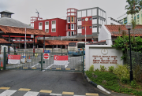
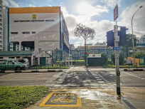
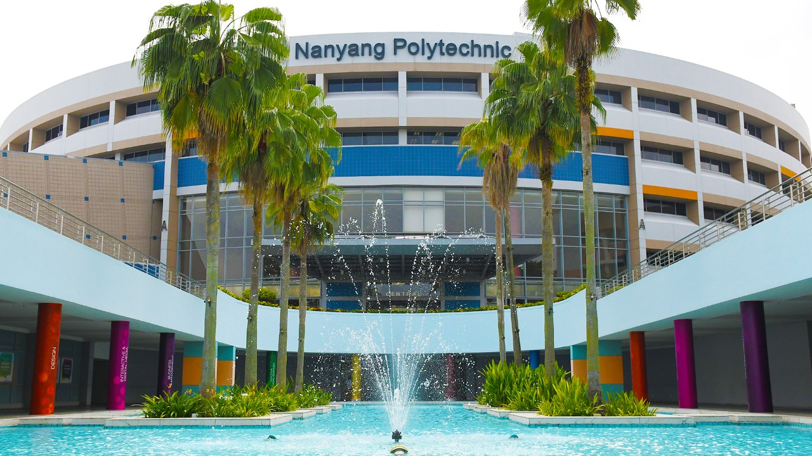

Contents
Qihua Primary School

I attended Qihua Primary School from 2009 to 2015. During my time there, I developed a strong foundation in various subjects and participated in numerous extracurricular activities. The school provided a nurturing environment that fostered my love for learning and helped shape my character. Unfortunately, I did not join any Co-Curricular activities which i regret.
Northbrooks Secondary School

After completing primary school, I attended Northbrooks Secondary School from 2015 to 2019. This period was instrumental in my personal and academic development. I explored a variety of subjects and began to discover my interests, particularly in technology and gaming. I initially joined the school's floorball team, which helped me build teamwork skills and improve my physical fitness. In my third year, I transitioned to the school's photography club, where I learned the fundamentals of photography and developed a creative eye for visual storytelling.
Institute of Technical Education
After completing secondary school, I enrolled in the Institute of Technical Education (ITE) from 2019 to 2023. I began with a course in Electronics, Computer Networking & Communications, where I spent two years building a strong foundation in electronic systems and network technologies. Following that, I advanced to a course in Game Development Technology, where I spent another two years honing my skills in programming, design, and interactive media development. During my time at ITE, I worked on various hands-on projects that deepened my understanding of the industry and equipped me with practical experience. I also learned programming languages such as C# and Python, and gained valuable real-world exposure through an industry attachment program.
Nanyang Polytechnic

I am currently pursuing a diploma in Game Development Technology at Nanyang Polytechnic (NYP) in Singapore. This program has allowed me to further develop my skills and knowledge in game design, programming, and development. I am excited about the future and look forward to continuing my journey in game development.